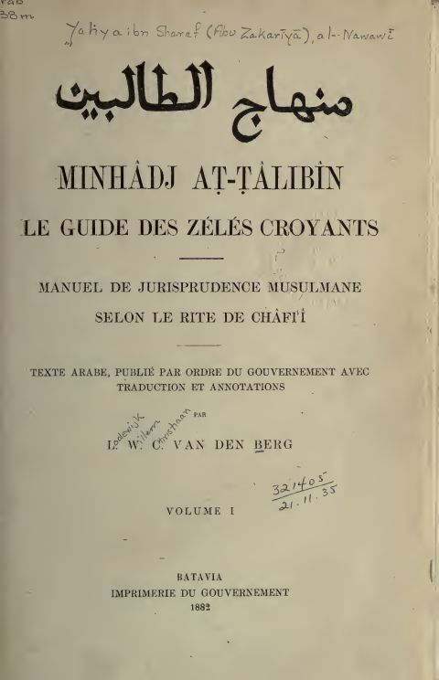

Downloads need an internet connection.
ترجمة منهاج الطالبين وعمدة المفتين في الفقه الشافعي
Authors: يحيى بن شرف النووي
Editors: فان دينبرغ
▫️ العنوان: ترجمة منهاج الطالبين وعمدة المفتين في الفقه الشافعي ▪️ المؤلف: #محيي_الدين_يحيى_بن_شرف_النووي ▫️ المحقق: #فان_دينبرغ ▪️ تاريخ النشر: 1882م ▫️ بلد النشر: باتافيا، #الهند ▪️ الطبعة: 1 ▫️ عدد الأجزاء: 1 ▪️ الصفحات: 488 ▫️ نوع الوعاء: #كتاب ▪️ التصنيف الرئيسي: #الفقه_وأصوله ▫️ التصنيف الفرعي: #فقه_شافعي ۪